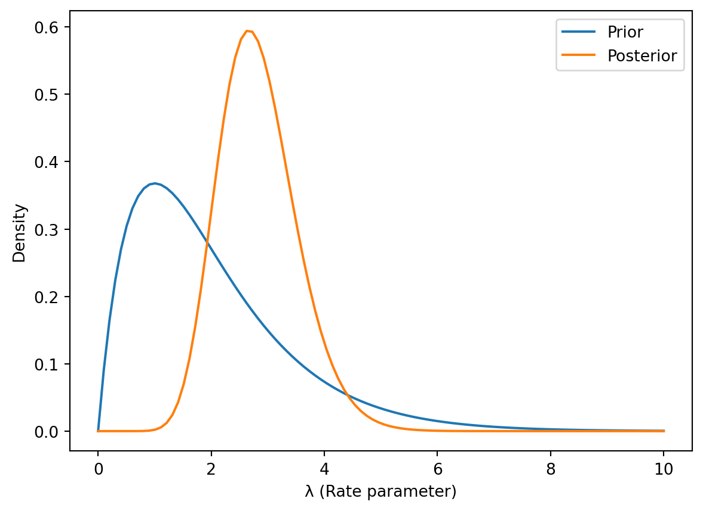

9Introduction to Continuous Probability Distributions
9.0.1 What are Continuous Distributions?
Discrete probability distributions deal with variables that can only take on specific, separate values (e.g., the number of heads in three coin flips). Continuous probability distributions, on the other hand, describe variables that can take on any value within a given range. Examples include height, weight, temperature, and time. Because there are infinitely many values within any interval, the probability of a continuous random variable taking on any single specific value is technically zero. Instead, we talk about the probability of the variable falling within a range of values.
9.0.2 Probability Density Functions (PDFs)
For a continuous random variable \(X\), its probability density function (PDF), denoted as \(f(x)\), describes the relative likelihood of the variable taking on a given value. Crucially, \(f(x)\) is not a probability itself. Instead, the probability that \(X\) falls within an interval \([a, b]\) is given by the integral of the PDF over that interval:
\(P(a \le X \le b) = \int_a^b f(x) \, dx\)
The PDF must satisfy two conditions:
\(f(x) \ge 0\) for all \(x\).
\(\int_{-\infty}^{\infty} f(x) \, dx = 1\) (The total area under the curve must equal 1).
9.0.3 Cumulative Distribution Functions (CDFs)
The cumulative distribution function (CDF), denoted as \(F(x)\), gives the probability that the random variable \(X\) is less than or equal to a given value \(x\):
The CDF is a non-decreasing function, meaning \(F(x_1) \le F(x_2)\) if \(x_1 \le x_2\). It’s also true that \(P(a < X \le b) = F(b) - F(a)\). The CDF provides a convenient way to calculate probabilities for various intervals.
9.0.4 Working with PDFs and CDFs in Python
Python libraries like SciPy provide tools for working with continuous distributions. Let’s illustrate using the normal distribution as an example:
import numpy as npimport scipy.stats as statsimport matplotlib.pyplot as plt# Define parameters for the normal distributionmu =0# Meansigma =1# Standard deviation# Create a normal distribution objectnorm_dist = stats.norm(loc=mu, scale=sigma)# Generate x values for plottingx = np.linspace(-4, 4, 100)# Calculate PDF valuespdf_values = norm_dist.pdf(x)# Calculate CDF valuescdf_values = norm_dist.cdf(x)# Plotting the PDFplt.figure(figsize=(10, 5))plt.plot(x, pdf_values)plt.title('Probability Density Function (PDF) of Normal Distribution')plt.xlabel('x')plt.ylabel('f(x)')plt.grid(True)plt.show()# Plotting the CDFplt.figure(figsize=(10, 5))plt.plot(x, cdf_values)plt.title('Cumulative Distribution Function (CDF) of Normal Distribution')plt.xlabel('x')plt.ylabel('F(x)')plt.grid(True)plt.show()# Calculate probability between -1 and 1probability = norm_dist.cdf(1) - norm_dist.cdf(-1)print(f"Probability between -1 and 1: {probability}")#Example using ppf (percent point function) - inverse of CDFpercentile_95 = norm_dist.ppf(0.95)print(f"95th percentile: {percentile_95}")
Probability between -1 and 1: 0.6826894921370859
95th percentile: 1.6448536269514722
This code demonstrates how to:
Create a normal distribution object using SciPy.
Calculate PDF and CDF values at various points.
Plot the PDF and CDF using Matplotlib.
Calculate probabilities using the CDF.
Use the percent point function (ppf), the inverse of the CDF.
graph LR
A[Normal Distribution] --> B(PDF);
A --> C(CDF);
B --> D{Calculate Probabilities};
C --> D;
D --> E[Interpret Results];
This diagram shows the relationship between the normal distribution, its PDF and CDF, and how they are used to calculate and interpret probabilities.
9.1 The Normal Distribution
9.1.1 Properties of the Normal Distribution
The normal distribution, also known as the Gaussian distribution, is arguably the most important continuous probability distribution. Its probability density function (PDF) is given by:
\(\mu\) is the mean (average) of the distribution, representing the center of the distribution.
\(\sigma\) is the standard deviation, representing the spread or dispersion of the distribution. A larger \(\sigma\) indicates greater spread.
\(\sigma^2\) is the variance.
Key properties:
Symmetrical: The distribution is perfectly symmetrical around its mean.
Unimodal: It has a single peak at the mean.
Bell-shaped: Its characteristic bell shape is easily recognizable.
Empirical Rule: Approximately 68% of the data falls within one standard deviation of the mean (\(\mu \pm \sigma\)), 95% within two standard deviations (\(\mu \pm 2\sigma\)), and 99.7% within three standard deviations (\(\mu \pm 3\sigma\)).
9.1.2 Standard Normal Distribution
The standard normal distribution is a special case of the normal distribution where \(\mu = 0\) and \(\sigma = 1\). It’s denoted as \(N(0, 1)\). Any normally distributed variable \(X\) can be standardized by transforming it into a standard normal variable \(Z\) using the following formula:
\(Z = \frac{X - \mu}{\sigma}\)
This transformation allows us to use standard normal tables or software to calculate probabilities for any normal distribution.
9.1.3 Calculating Probabilities with the Normal Distribution
To calculate probabilities using the normal distribution, we typically use the CDF, \(F(x)\), which gives \(P(X \le x)\). For the standard normal distribution, we often denote the CDF as \(\Phi(z)\). We can find these probabilities using statistical tables or software. For example:
\(P(a \le X \le b) = F(b) - F(a) = \Phi(\frac{b - \mu}{\sigma}) - \Phi(\frac{a - \mu}{\sigma})\)
9.1.4 Python Implementation using SciPy
SciPy’s scipy.stats module provides convenient functions for working with the normal distribution:
import numpy as npimport scipy.stats as statsimport matplotlib.pyplot as plt# Parameters for a normal distributionmu =5sigma =2# Create a normal distribution objectnorm_dist = stats.norm(loc=mu, scale=sigma)# Probability density function (PDF)x = np.linspace(mu -4*sigma, mu +4*sigma, 100)pdf_values = norm_dist.pdf(x)# Cumulative distribution function (CDF)cdf_values = norm_dist.cdf(x)# Probability between two valuesprob_interval = norm_dist.cdf(7) - norm_dist.cdf(3)#Plotting the PDFplt.figure(figsize=(10,5))plt.plot(x, pdf_values)plt.title("Normal Distribution PDF")plt.xlabel("x")plt.ylabel("f(x)")plt.show()#Plotting the CDFplt.figure(figsize=(10,5))plt.plot(x, cdf_values)plt.title("Normal Distribution CDF")plt.xlabel("x")plt.ylabel("F(x)")plt.show()print(f"Probability between 3 and 7: {prob_interval}")
Probability between 3 and 7: 0.6826894921370859
9.1.5 Visualizing the Normal Distribution
The code above includes plotting the PDF and CDF. This visualization helps understand the distribution’s shape and probabilities.
9.1.6 Applications of the Normal Distribution in Bayesian Analysis
The normal distribution plays a essential role in Bayesian analysis, particularly as a prior distribution (representing our initial beliefs about a parameter) or as a likelihood function (representing the probability of observing data given a parameter value). For example, in Bayesian linear regression, the prior for the regression coefficients is often assumed to be normally distributed. Conjugate priors (priors that lead to posterior distributions of the same family) are frequently used for computational convenience and the normal distribution paired with a normal likelihood results in a normal posterior. This simplifies calculations and interpretation. The Central Limit Theorem further reinforces the importance of the normal distribution; the sum of many independent random variables, irrespective of their individual distributions, tends towards a normal distribution. This means many real-world phenomena can be well-approximated by a normal distribution.
graph LR
A[Prior Distribution (Normal)] --> B{Bayes' Theorem};
C[Likelihood Function (Normal)] --> B;
B --> D[Posterior Distribution (Normal)];
D --> E[Inference and Predictions];
This diagram illustrates the role of the normal distribution as a prior and likelihood in Bayesian analysis, resulting in a normal posterior distribution.
9.2 The Beta Distribution
9.2.1 Properties of the Beta Distribution
The beta distribution is a continuous probability distribution defined on the interval [0, 1]. It’s particularly useful for modeling probabilities and proportions. Its probability density function (PDF) is given by:
\(B(\alpha, \beta) = \frac{\Gamma(\alpha)\Gamma(\beta)}{\Gamma(\alpha+\beta)}\) is the beta function, a normalization constant ensuring the integral of the PDF over [0,1] equals 1. \(\Gamma(.)\) is the gamma function, a generalization of the factorial function to real numbers.
The mean and variance of the beta distribution are:
The shape of the beta distribution is highly flexible depending on the values of \(\alpha\) and \(\beta\).
9.2.2 Beta Distribution as a Conjugate Prior for Bernoulli and Binomial
The beta distribution is a conjugate prior for the Bernoulli and binomial distributions. This means that if the prior distribution for a parameter (e.g., the probability of success in a Bernoulli trial) is beta, then the posterior distribution after observing data from a Bernoulli or binomial experiment will also be beta. This makes Bayesian inference with these distributions particularly convenient.
If we have a Bernoulli likelihood with parameter \(\theta\) (probability of success) and a Beta(\(\alpha\), \(\beta\)) prior, the posterior distribution is Beta(\(\alpha + k\), \(\beta + n - k\)), where \(k\) is the number of successes observed in \(n\) trials. Similarly, for a binomial likelihood, the posterior is also a Beta distribution.
9.2.3 Calculating Probabilities with the Beta Distribution
Probabilities are calculated using the CDF, which is not analytically solvable but is readily available through computational tools. SciPy provides these functions. For example, to find the probability that \(X \le x\), we use the CDF:
import numpy as npimport scipy.stats as statsimport matplotlib.pyplot as plt# Parameters for a Beta distributionalpha =2beta =5# Create a beta distribution objectbeta_dist = stats.beta(a=alpha, b=beta)# PDF valuesx = np.linspace(0, 1, 100)pdf_values = beta_dist.pdf(x)# CDF valuescdf_values = beta_dist.cdf(x)# Probability between two valuesprob_interval = beta_dist.cdf(0.6) - beta_dist.cdf(0.3)#Plotting PDFplt.figure(figsize=(10,5))plt.plot(x, pdf_values)plt.title("Beta Distribution PDF")plt.xlabel("x")plt.ylabel("f(x)")plt.show()#Plotting CDFplt.figure(figsize=(10,5))plt.plot(x, cdf_values)plt.title("Beta Distribution CDF")plt.xlabel("x")plt.ylabel("F(x)")plt.show()print(f"Probability between 0.3 and 0.6: {prob_interval}")
Probability between 0.3 and 0.6: 0.37921499999999975
9.2.5 Visualizing the Beta Distribution
The code above generates plots of the PDF and CDF, visually representing the distribution. Varying \(\alpha\) and \(\beta\) will drastically alter the shape.
9.2.6 Bayesian Inference with Beta Distribution: Examples
Example: Estimating the probability of heads in a biased coin.
Suppose we flip a coin 10 times and observe 3 heads. We can use a beta prior to represent our prior belief about the probability of heads (let’s use a Beta(1,1) - a uniform prior). After observing the data, the posterior distribution will be Beta(1+3, 1+10-3) = Beta(4,8).
import scipy.stats as statsimport matplotlib.pyplot as plt#Priorprior = stats.beta(1,1)x = np.linspace(0,1,100)plt.plot(x,prior.pdf(x),label='Prior')#Posteriorposterior = stats.beta(4,8)plt.plot(x,posterior.pdf(x),label='Posterior')plt.xlabel("θ (Probability of heads)")plt.ylabel("Density")plt.legend()plt.show()
This shows how the data updates our belief about the coin’s fairness.
graph LR
A[Prior: Beta(1,1)] --> B{10 flips, 3 Heads};
B --> C[Posterior: Beta(4,8)];
C --> D[Inference about θ];
This diagram summarizes the Bayesian updating process using the beta distribution. Further examples can incorporate more complex scenarios with different priors and data.
9.3 The Gamma Distribution
9.3.1 Properties of the Gamma Distribution
The gamma distribution is a flexible two-parameter family of continuous probability distributions. It’s often used to model positive, continuous random variables, such as waiting times or durations. Its probability density function (PDF) is defined as:
\(f(x; k, θ) = \frac{1}{Γ(k)θ^k} x^{k-1}e^{-x/θ}\) for \(x ≥ 0\)
where:
\(x\) is the random variable.
\(k > 0\) is the shape parameter, influencing the distribution’s shape.
\(θ > 0\) is the scale parameter, influencing the distribution’s spread.
\(Γ(k)\) is the gamma function, a generalization of the factorial function to real numbers.
The mean and variance are:
Mean: \(E[X] = kθ\)
Variance: \(Var(X) = kθ^2\)
Different combinations of \(k\) and \(θ\) lead to various shapes. For example, if \(k=1\), it simplifies to an exponential distribution.
9.3.2 Relationship to other distributions (Exponential, Chi-squared)
The gamma distribution has strong relationships with other important distributions:
Exponential Distribution: The exponential distribution is a special case of the gamma distribution where \(k = 1\). The exponential distribution is commonly used to model the time until an event occurs in a Poisson process (e.g., time until a machine fails).
Chi-squared Distribution: A chi-squared distribution with \(ν\) degrees of freedom is equivalent to a gamma distribution with shape parameter \(k = ν/2\) and scale parameter \(θ = 2\). Chi-squared distributions are essential in hypothesis testing and statistical inference.
9.3.3 Calculating Probabilities with the Gamma Distribution
Probabilities are calculated using the CDF, \(P(X ≤ x) = F(x; k, θ) = \int_0^x f(t; k, θ) \, dt\). This integral doesn’t have a closed-form solution, but it’s readily available numerically.
9.3.4 Python Implementation using SciPy
import numpy as npimport scipy.stats as statsimport matplotlib.pyplot as plt# Parameters for a Gamma distributionk =2# Shape parametertheta =3# Scale parameter# Create a gamma distribution objectgamma_dist = stats.gamma(a=k, scale=theta)# Generate x values for plottingx = np.linspace(0, 20, 100) #Adjust range as needed# Calculate PDF valuespdf_values = gamma_dist.pdf(x)# Calculate CDF valuescdf_values = gamma_dist.cdf(x)# Calculate probability between two valuesprob_interval = gamma_dist.cdf(10) - gamma_dist.cdf(5)#Plotting PDFplt.figure(figsize=(10,5))plt.plot(x, pdf_values)plt.title("Gamma Distribution PDF")plt.xlabel("x")plt.ylabel("f(x)")plt.show()#Plotting CDFplt.figure(figsize=(10,5))plt.plot(x, cdf_values)plt.title("Gamma Distribution CDF")plt.xlabel("x")plt.ylabel("F(x)")plt.show()print(f"Probability between 5 and 10: {prob_interval}")
Probability between 5 and 10: 0.34908096972873787
9.3.5 Visualizing the Gamma Distribution
The code above generates plots of the PDF and CDF, providing a visual representation of the distribution’s shape. The shape changes dramatically as you adjust k and theta.
9.3.6 Bayesian Inference with Gamma Distribution: Examples
The gamma distribution serves as a conjugate prior for many likelihood functions involving positive parameters, such as the Poisson distribution (for modeling counts) and the exponential distribution (for modeling waiting times). For instance, if our likelihood function is a Poisson distribution and we use a Gamma prior for the rate parameter (λ), the posterior distribution will also be a gamma distribution. This simplifies Bayesian calculations significantly.
Example: Estimating the rate parameter of a Poisson process.
Let’s say we are modeling the number of customers arriving at a store per hour, following a Poisson distribution. We can use a Gamma prior for the rate parameter (λ). Suppose we observe 15 customers in 5 hours (an average of 3 customers per hour). Assume our prior is Gamma(2,1). The posterior is then Gamma(2+15, 1/(1/1 + 5)).
import scipy.stats as statsimport matplotlib.pyplot as plt# Priorprior = stats.gamma(a=2, scale=1)x = np.linspace(0,10,100) #Adjust range as neededplt.plot(x,prior.pdf(x), label='Prior')# Posterior (assuming a Poisson likelihood and 15 customers in 5 hours)posterior = stats.gamma(a=17, scale=1/6)plt.plot(x,posterior.pdf(x), label='Posterior')plt.xlabel("λ (Rate parameter)")plt.ylabel("Density")plt.legend()plt.show()

This demonstrates how the observed data shifts our belief about the rate parameter.
graph LR
A[Prior: Gamma(2,1)] --> B{15 customers in 5 hours (Poisson)};
B --> C[Posterior: Gamma(17, 1/6)];
C --> D[Inference about λ];
This diagram shows the Bayesian updating process using the gamma distribution as a conjugate prior for a Poisson likelihood. The specific parameters in the posterior would change based on your observed data and prior assumptions.
9.4 Bayesian Inference with Continuous Distributions
9.4.1 Prior and Posterior Distributions
In Bayesian inference, we start with a prior distribution, \(P(\theta)\), which represents our initial beliefs about the unknown parameter(s) \(\theta\). This prior can be informed by previous knowledge or expert opinion, or it can be a non-informative prior expressing minimal prior assumptions. After observing data, \(D\), we update our beliefs using Bayes’ theorem:
The resulting posterior distribution, \(P(\theta|D)\), represents our updated beliefs about \(\theta\) after considering the data. \(P(D|\theta)\) is the likelihood function, describing the probability of observing the data given a specific value of \(\theta\), and \(P(D)\) is the marginal likelihood (evidence), a normalizing constant.
9.4.2 Updating Beliefs with Data
The process of Bayesian inference involves updating our beliefs iteratively as more data becomes available. The posterior distribution from one stage becomes the prior for the next stage. This sequential updating is a fundamental aspect of Bayesian thinking. As more data is incorporated, the influence of the prior diminishes, and the posterior distribution becomes increasingly driven by the data. This is often visualized as the posterior becoming more concentrated around the true parameter value.
9.4.3 Markov Chain Monte Carlo (MCMC) Methods
For many complex models, calculating the posterior distribution analytically is intractable. Markov Chain Monte Carlo (MCMC) methods provide a powerful computational approach to approximate the posterior distribution. These methods simulate a Markov chain whose stationary distribution is the target posterior distribution. By running the chain for a sufficiently long time, we can obtain samples from the approximate posterior. These samples can then be used to estimate parameters, calculate credible intervals, and make predictions. Popular MCMC algorithms include:
Metropolis-Hastings: A widely used algorithm that proposes new samples and accepts or rejects them based on a probability that depends on the likelihood and prior.
Gibbs Sampling: A special case of Metropolis-Hastings that is particularly efficient when the full conditional distributions (the distribution of one parameter given the others) are easy to sample from.
Hamiltonian Monte Carlo (HMC): A more advanced algorithm that uses Hamiltonian dynamics to look at the parameter space more efficiently.
9.4.4 Illustrative Examples using PyMC or similar libraries
PyMC is a powerful Python library for probabilistic programming, making it easy to implement Bayesian inference using MCMC methods. Let’s consider a simple example of Bayesian linear regression:
import pymc as pmimport numpy as npimport matplotlib.pyplot as plt# Generate some sample datanp.random.seed(42)N =100X = np.linspace(0, 10, N)true_slope =2.0true_intercept =1.0true_sigma =1.5y = true_slope * X + true_intercept + np.random.normal(0, true_sigma, N)with pm.Model() as model:# Priors slope = pm.Normal("slope", mu=0, sigma=10) intercept = pm.Normal("intercept", mu=0, sigma=10) sigma = pm.HalfNormal("sigma", sigma=5)# Likelihood mu = slope * X + intercept y_obs = pm.Normal("y_obs", mu=mu, sigma=sigma, observed=y)# Posterior Sampling trace = pm.sample(2000, tune=1000, cores=1) # Adjust number of samples and cores as neededpm.summary(trace)pm.plot_posterior(trace)plt.show()
Initializing NUTS using jitter+adapt_diag...
Sequential sampling (2 chains in 1 job)
NUTS: [slope, intercept, sigma]
/home/leopard/development/QuantumTraderX/venv/lib/python3.12/site-packages/rich/live.py:231: UserWarning: install
"ipywidgets" for Jupyter support
warnings.warn('install "ipywidgets" for Jupyter support')
Sampling 2 chains for 1_000 tune and 2_000 draw iterations (2_000 + 4_000 draws total) took 3 seconds.
We recommend running at least 4 chains for robust computation of convergence diagnostics
This code defines a Bayesian linear regression model with normal priors for the slope and intercept, and a half-normal prior for the error standard deviation. PyMC then automatically samples from the posterior distribution using an MCMC algorithm (by default, it uses the No-U-Turn Sampler, NUTS, a variant of HMC).
graph LR
A[Prior Distributions] --> B(Likelihood Function);
B --> C[Posterior Distribution (via MCMC)];
C --> D[Inference & Predictions];
This diagram summarizes the Bayesian workflow in PyMC. The MCMC algorithms handle the challenging task of sampling from the posterior distribution. Remember to install PyMC using pip install pymc3. This example demonstrates how to set up a Bayesian model, define priors and likelihoods, and then use PyMC to obtain posterior samples, allowing for parameter estimation and uncertainty quantification. The summary and plot_posterior functions help you interpret the results. The quality of the MCMC sampling (convergence, etc.) is crucial, and diagnostics should be used to evaluate the quality of the chain.
9.5 Advanced Topics and Applications
9.5.1 Mixture Models
Mixture models are powerful tools for modeling data generated from multiple underlying distributions. They assume that the observed data is a mixture of samples from different component distributions, each with its own parameters. A common example is a Gaussian mixture model (GMM), where the data is assumed to be a mixture of Gaussian distributions. The probability density function of a GMM with \(K\) components is:
\(\pi_k\) are the mixing proportions (probabilities of belonging to each component), with \(\sum_{k=1}^K \pi_k = 1\).
\(N(x|\mu_k, \Sigma_k)\) is the probability density function of a Gaussian distribution with mean \(\mu_k\) and covariance matrix \(\Sigma_k\).
Bayesian inference for mixture models involves placing prior distributions on the mixing proportions and the parameters of each component distribution. MCMC methods are typically employed to sample from the posterior distribution.
9.5.2 Hierarchical Models
Hierarchical models are used when data is grouped or clustered, and we assume that the parameters of the underlying distributions are related across groups. This allows for borrowing strength across groups, improving the estimation of parameters for groups with limited data. A hierarchical model can be represented as:
Parameters at the group level: \(\theta_i \sim P(\theta_i|\alpha)\) where \(\alpha\) is a hyperparameter, shared across all groups.
Data within each group: \(x_{ij} \sim P(x_{ij}|\theta_i)\)
Bayesian inference for hierarchical models involves placing prior distributions on the hyperparameters and the group-level parameters. MCMC methods are often used to sample from the posterior distribution.
9.5.3 Dealing with Improper Priors
An improper prior is a prior distribution that doesn’t integrate to 1 (i.e., it doesn’t have a proper probability density function). While improper priors are sometimes used to express a lack of prior knowledge, they can lead to improper posterior distributions if not used carefully. It’s essential to ensure that the posterior distribution is proper (integrable) when using improper priors. This often requires careful consideration of the likelihood function and the choice of improper prior. Often, using a weakly informative prior instead can sidestep these issues.
9.5.4 Model Selection and Comparison
Choosing the best model for a given dataset is a essential aspect of Bayesian inference. Several methods are used for model comparison:
Bayes Factor: The ratio of the marginal likelihoods of two competing models. A Bayes factor greater than 1 favors the first model.
Deviance Information Criterion (DIC): A model selection criterion that balances model fit and complexity. Lower DIC values indicate better models.
Leave-One-Out Cross-Validation (LOO-CV): A robust model comparison technique that estimates the out-of-sample predictive performance. Models with higher LOO-CV scores perform better on unseen data.
PyMC provides tools for calculating some of these metrics. Model selection often involves careful consideration of the tradeoff between model fit and complexity (Occam’s Razor).
#Illustrative example (Conceptual - actual implementation requires more complex code)#Imagine we have two models, ModelA and ModelB, for the same dataset# ... (Code to define and fit ModelA and ModelB using PyMC) ...#Model Comparison using Bayes Factor (conceptually)# marginal_likelihood_A = pm.marginal_likelihood(trace_A) #Placeholder# marginal_likelihood_B = pm.marginal_likelihood(trace_B) #Placeholder# bayes_factor = marginal_likelihood_A / marginal_likelihood_B#print(f"Bayes Factor (ModelA vs ModelB): {bayes_factor}")# ... (Code to calculate DIC or LOO-CV using PyMC or other suitable libraries) ...
This is a conceptual outline. Implementing model selection rigorously requires careful consideration of the specific models and the use of appropriate functions from PyMC or other Bayesian modeling packages. Note that calculating marginal likelihoods is often computationally demanding. The code snippets are placeholders to illustrate the general approach. A complete implementation would be significantly more extensive, especially for more complex models.
graph LR
A[Model A] --> B(Bayes Factor/DIC/LOO-CV);
C[Model B] --> B;
B --> D[Model Selection];
This diagram illustrates the process of model selection using Bayes Factors or other model comparison metrics. The choice of the specific metric depends on the characteristics of the models and the available computational resources.